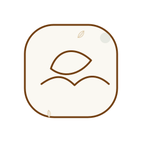
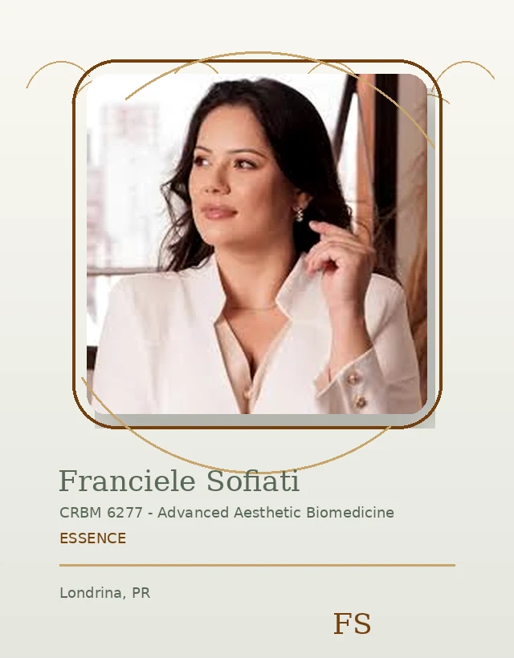
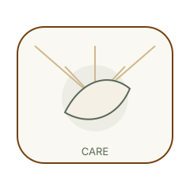
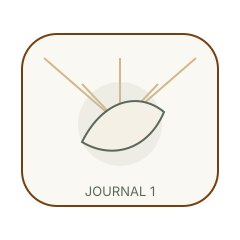

Care
Attentive guidance.
Essence / Hero Promise
A calm, attentive approach shaped around your goals, comfort, and realistic expectations.

Essence / Meet Franciele
Franciele brings a careful presence to each consultation, shaped by conversation and observation.
Essence / Care Routes
Explore focused guidance for skin, laser, care planning, and responsible expectations.

Attentive guidance.
Skin context.
Suitability first.
Realistic goals.

Essence / Consultation Approach
The first step is a calm conversation about your skin, routine, goals, and comfort level.
Essence / Editorial Break
A refined experience should feel calm, considered, and easy to understand.

Essence / Responsible Results
Results should be discussed responsibly, with attention to individual needs and natural-looking confidence.

Essence / Journal Preview
Read calm, practical guidance before choosing your next step.
Useful route.
Useful route.
Useful route.

Essence / Contact CTA
Send your question or request an evaluation when you feel ready.
Essence / Brand Values
Every decision begins with listening, clarity, safety, and natural-looking confidence.
Attentive guidance.
Clear explanations.
Responsible boundaries.
Natural confidence.
Essence / Footer Bridge
Continue through the site or reach out directly for guidance.